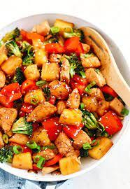

Pineapple Chicken

Ingredients
2 tsp canola or sesame oil
1 (10-oz) package frozen broccoli (or stir-fry vegetable mix), thawed*
1/2 C stir-fry sauce
1/4 C pineapple juice, use reserved juice from canned Pineapple
1/4 tsp garlic powder
1/4 tsp crushed red pepper (optional)
1 (15-oz) can Pineapple chunks or tidbits, drained (reserved the juice)
2 C diced cooked chicken or 2 (1o-oz) cans chicken breast, drained and flaked
Method
1. Heat the oil in a large skillet over medium high heat. Add all ingredients EXCEPT the pineapple & chicken.
Cook and stir until heated through, 5-6 mins.
2. Add pineapple and chicken; cook another 2 minutes. Serve over instant brown rice or whole wheat pasta.
*Thaw frozen vegetables in the microwave by holding the package under cold running water for several minutes.